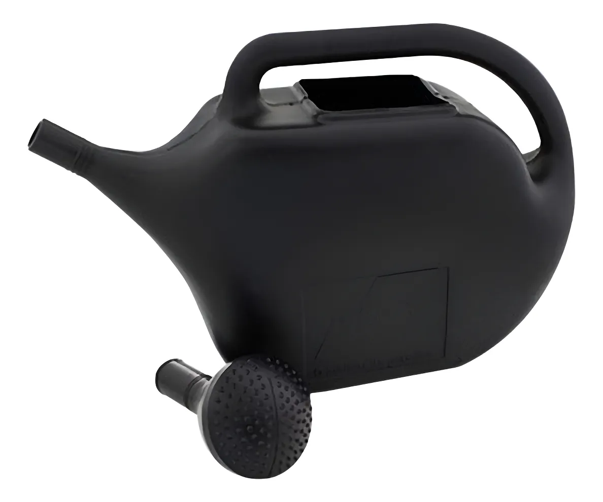
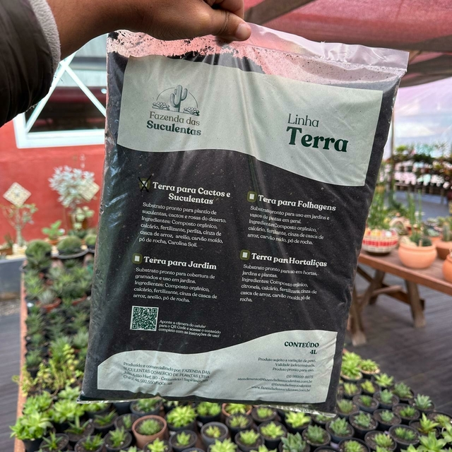
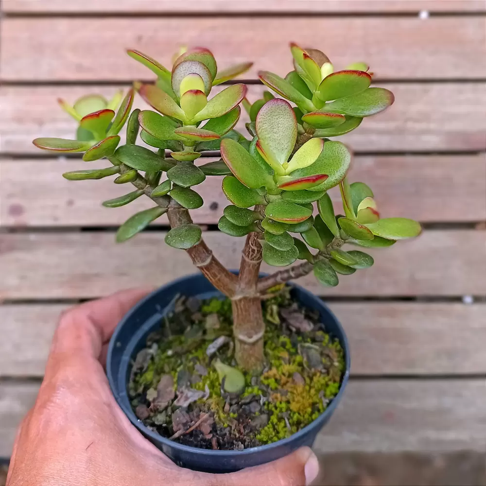
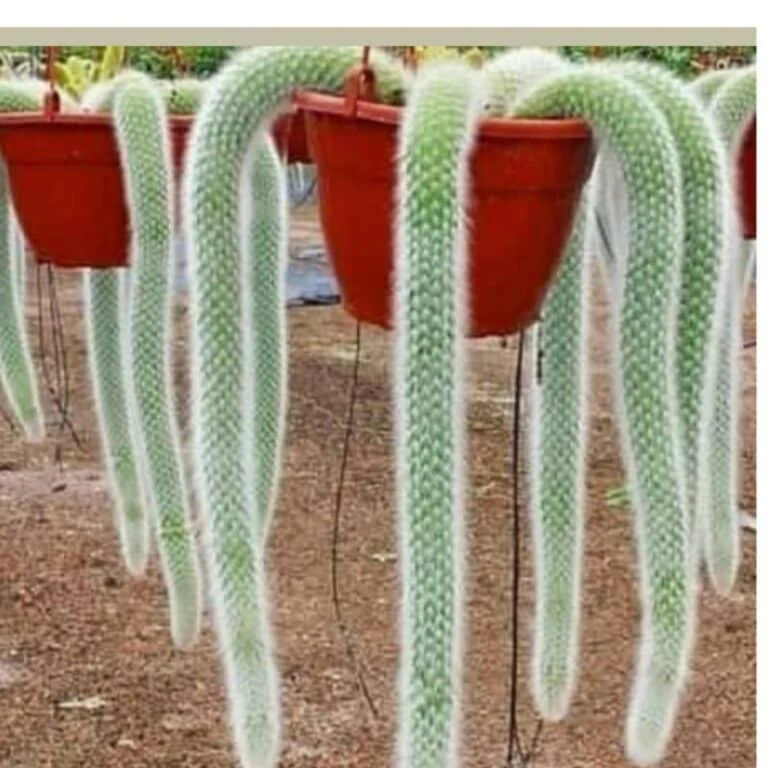
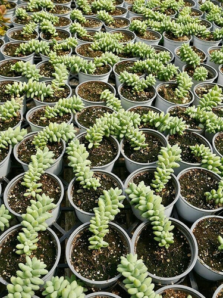

Regador de Plantas 10 Litros – Eficiência e praticidade para seu jardim
R$ 29,99
Adicionar ao carrinho
Mantenha suas plantas sempre saudáveis com o regador de 10 litros, projetado para unir capacidade,
resistência
e conforto no uso diário. Fabricado em polietileno de alta densidade, esse regador é leve,
durável e
ideal para hortas, jardins, vasos e áreas verdes de médio a grande porte.
Seu bico tipo chuveirinho removível garante uma irrigação uniforme e delicada, evitando o
desperdício
de
água e protegendo folhas e flores mais sensíveis. O design ergonômico com alça reforçada facilita o
transporte e
o manuseio, mesmo quando cheio.
- Capacidade: 10 litros
- Material: Plástico resistente (polietileno de alta densidade)
- Bico: Chuveirinho removível para irrigação suave
- Alça: Anatômica e reforçada para maior conforto
- Uso ideal: Hortas, jardins, vasos e estufas

Substrato para Cactos e Suculentas – Linha Terra
R$ 29,99
Adicionar ao carrinho
Garanta o melhor cuidado para suas plantas com o substrato ideal para cactos e suculentas.
Desenvolvido
com
uma
fórmula balanceada, esse substrato oferece alta drenagem, excelente aeração e nutrição sob
medida,
evitando o excesso de umidade que pode comprometer a saúde das raízes.
Composto por casca de pinus, carvão vegetal, húmus de minhoca e arenito, ele cria um ambiente leve e
poroso,
permitindo que as raízes respirem e se desenvolvam com vigor. Pronto para uso, é perfeito para
vasos,
jardineiras e terrários, proporcionando praticidade e resultados visíveis desde o primeiro plantio.
- Composição: Casca de pinus, carvão vegetal, húmus de minhoca, perlita e arenito
- Aeração ideal: Solo leve e solto para raízes saudáveis
- Pronto para uso: Não requer misturas adicionais
- Indicado para: Cactos, suculentas, rosa-do-deserto, zamioculca e outras espécies
xerófitas

Crassula ovata – Beleza, resistência e prosperidade em forma de planta
R$ 15,99
Adicionar ao carrinho
A Crassula ovata, popularmente chamada de planta-jade, é uma suculenta ornamental que une
elegância, simbolismo e facilidade de cultivo. Com folhas carnudas de tom verde-brilhante e
bordas
avermelhadas sob o sol, essa planta é considerada um símbolo de sorte e prosperidade, sendo
amplamente utilizada em projetos de decoração e Feng Shui.
Seu crescimento lento e estrutura ramificada fazem dela uma excelente opção para bonsais
naturais,
vasos decorativos ou composições com outras suculentas. Além disso, é extremamente resistente:
requer
pouca
água, adapta-se bem à luz solar direta ou indireta e pode viver por décadas com os cuidados certos.
- Tamanho: Até 1 metro de altura (em cultivo prolongado)
- Ambiente ideal: Sol pleno ou meia sombra
- Regas: Apenas quando o solo estiver seco
- Flores: Pequenas, brancas ou rosadas, no final do inverno
- Diferencial: Planta associada à prosperidade e equilíbrio energético

Cacto Rabo-de-Macaco – Exuberância pendente e floração surpreendente
R$ 79,90
Adicionar ao carrinho
O cacto rabo-de-macaco é uma planta exótica e ornamental que conquista pela sua aparência única e
floração
vibrante. Com hastes longas, pendentes e cobertas por espinhos finos e brancos que lembram
pelos,
essa espécie é perfeita para vasos suspensos, jardins verticais e ambientes que pedem um
toque
selvagem e elegante.
Originário das encostas rochosas da Bolívia, o Hildewintera colademononis floresce na primavera e
verão
com
flores avermelhadas e exuberantes, atraindo beija-flores e admiradores. Além de sua beleza, é
fácil
de cuidar: precisa de luz indireta, substrato bem drenado e regas espaçadas — ideal para quem
busca
praticidade sem abrir mão do estilo.
- Comprimento das hastes: até 50 cm
- Ambiente ideal: Luz filtrada ou sol da manhã
- Regas: Moderadas, com substrato seco entre irrigações
- Floração: Vermelha intensa, primavera/verão
- Indicado para: Vasos suspensos, jardins verticais, decoração de interiores

Suculenta Rabo-de-Burro – Elegância pendente e charme natural
R$ 5,90
Adicionar ao carrinho
A suculenta Rabo-de-Burro é uma verdadeira joia do mundo vegetal. Com hastes longas e pendentes
cobertas
por
folhas carnudas e verde-azuladas, essa planta cria um efeito cascata exuberante que transforma
qualquer
ambiente em um espaço mais leve e sofisticado. Ideal para vasos suspensos, arranjos
verticais ou
decorações internas com estilo natural e moderno.
Originária do México, a Sedum morganianum é resistente, fácil de cuidar e perfeita para quem
busca
beleza com baixa manutenção. Suas folhas delicadas exigem manuseio cuidadoso, mas em troca
oferecem
um
visual único e encantador. Na primavera, presenteia com pequenas flores rosadas ou
avermelhadas
que
surgem nas pontas dos caules, adicionando ainda mais charme à composição.
- Comprimento das hastes: até 90 cm
- Ambiente ideal: Luz indireta ou sol da manhã
- Regas: Moderadas, com solo seco entre irrigações
- Floração: Primavera, com flores delicadas em tons suaves
- Indicado para: Vasos suspensos, jardins verticais, decoração de interiores